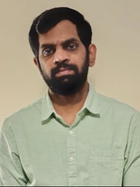

CURRICULUM VITAE

Summary
I am Physicist with more than five years of lecturig experience. I have developed immense desire for learning
web development during my teaching years. I then switched to web development by attending an online bootcamp
on web development. Now I am a passionate developer.
Education
Master of Science in Physics
- University of Calicut
- 2013-2015
Bachelor of Science in Physics
- University of Calicut
- 2010-2013
Plus Two
- Board of Higher Secondary Education, Kerala
- 2008-2010
SSLC
- Board of Public Examinations, Kerala
- 2007-2008
Experience
Assistant Professor on Contract
03 January 2017 - 30 November 2022
AVAH Arts and Science College, Kerala, India
- 5 years of experience as a Physics lecturer. I taught both undergraduate and postgraduate studends.
- I have supervised undergraduate laboratory works
- I have also served as the IQAC coordinator and anti-ragging cell convenor.
- Participated many valuation camp conducted by Calicut University.
Sorting Assistant
23 March 2023 - 30 September 2023
Royal Mail, Preston, UK
- 6 months of experience in sorting mails and parcels.
- Warehouse management
Hygiene Operative
01 October 2023 - still working
Dr. Oetker Pizza factory, Leyland, UK
- 4 months of experienceas as a hygiene operative
- Worked within a team. Good teamwork.
Skills
- HTML knowledge
- Microsoft Office tools
- Teaching
- Communication
Achievements
- Two talks conducted
- Certification on basic MS office
Hobbies
Contact Details